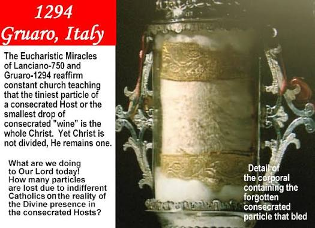
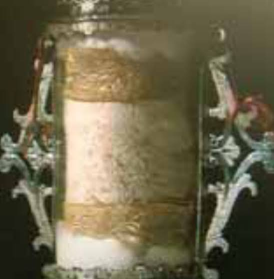

The Eucharistic Miracle of Gruaro-Valvasone occurred in 1294 in northern Italy when a consecrated Host left inside an altar cloth began to bleed. While the miraculous event took place in the town of Gruaro, the sacred relic is preserved today in the nearby town of Valvasone.
A young housemaid was washing altar linens from the Church of St. Giusto in Gruaro. While washing, she discovered a consecrated Host that had been accidentally left inside the fabric. As she unfolded the linen, real blood began flowing from the Host, staining the cloth.
A dispute arose between local authorities regarding who would house the relic. The Holy See intervened, ruling that the Counts of Valvasone could keep the relic, provided they constructed a new church dedicated to the Most Holy Body of Christ by 1483.